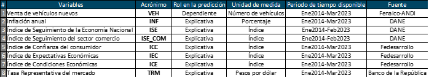

bookdown::gitbook # Introducción
El análisis de series de tiempo de venta de vehículos puede proporcionar información valiosa sobre las tendencias y patrones en la demanda de vehículos. Aquí hay algunos pasos generales que se pueden seguir para analizar una serie de tiempo de venta de vehículos:
• Recopilar datos: Lo primero que se debe hacer es recopilar datos históricos sobre las ventas de vehículos en un período de tiempo determinado. Estos datos pueden incluir el número de vehículos vendidos por mes, trimestre, año, región geográfica, marca y modelo, entre otros.
• Visualizar los datos: Una vez que se han recopilado los datos, es importante visualizarlos en una gráfica de línea o en un diagrama de puntos para identificar patrones y tendencias. La visualización de los datos puede proporcionar una visión general de la serie de tiempo, permitiendo identificar los picos y los valles y los cambios en la tendencia a lo largo del tiempo.
• Análisis de estacionalidad: En el análisis de series de tiempo, es común que exista un patrón estacional en los datos, lo que significa que las ventas pueden ser más altas en ciertos meses o épocas del año. Identificar y modelar la estacionalidad puede ayudar a comprender las fluctuaciones en las ventas y mejorar las predicciones futuras.
• Identificar tendencias y patrones: Además de la estacionalidad, es importante identificar cualquier tendencia o patrón en los datos. Por ejemplo, puede haber una tendencia general de aumento o disminución de las ventas de vehículos en el tiempo, o puede haber patrones recurrentes a largo plazo que afectan las ventas.
• Realizar análisis de causalidad: El análisis de causalidad implica identificar los factores que pueden estar contribuyendo a las tendencias y patrones en los datos. Por ejemplo, pueden existir factores económicos, demográficos o de marketing que estén influyendo en la demanda de vehículos.
• Modelar y predecir: Finalmente, se puede utilizar la información obtenida del análisis de series de tiempo para modelar y predecir las ventas futuras de vehículos. Esto puede ayudar a las empresas a planificar su producción y comercialización y ajustar sus estrategias de negocio para maximizar las ventas y minimizar los costos.
La información que se utilizará en el transcurso de la asignatura es de acceso público, ya que es generada por entidades como el DANE, Banco de la República, Fedesarrollo, Fenalco y la ANDI. En la tabla 1 se describen las variables que se incluyen en el dataset de análisis.
0.1 Descripción de las variables del dataset elegido

| …1 | VEH | INF | ISE | ISE_COM | ICC | IEC | ICE | TRM |
|---|---|---|---|---|---|---|---|---|
| 2014-01-01 | 20115 | 2.13 | 89.38968 | 86.54366 | 27.3 | 28.2 | 25.9 | 1960.41 |
| 2014-02-01 | 23744 | 2.32 | 92.91968 | 90.38523 | 15.7 | 14.8 | 17.2 | 2040.51 |
| 2014-03-01 | 24075 | 2.51 | 95.65122 | 91.39628 | 18.5 | 18.0 | 19.3 | 2022.19 |
| 2014-04-01 | 26128 | 2.72 | 92.32801 | 95.26309 | 18.5 | 16.2 | 21.8 | 1939.27 |
| 2014-05-01 | 26865 | 2.93 | 95.56390 | 93.78647 | 23.9 | 22.7 | 25.8 | 1915.46 |
| 2014-06-01 | 22974 | 2.79 | 95.43544 | 94.05604 | 26.5 | 28.6 | 23.4 | 1888.10 |
| 2014-07-01 | 27650 | 2.89 | 97.57987 | 100.33581 | 26.6 | 25.9 | 27.6 | 1858.40 |
| 2014-08-01 | 27465 | 3.02 | 97.52460 | 95.69554 | 20.5 | 16.0 | 27.2 | 1899.07 |
| 2014-09-01 | 29528 | 2.86 | 98.39200 | 94.23638 | 17.5 | 16.2 | 19.4 | 1971.34 |
| 2014-10-01 | 31386 | 3.29 | 98.34370 | 97.17163 | 21.7 | 20.9 | 22.8 | 2047.03 |
| 2014-11-01 | 25700 | 3.65 | 101.97067 | 102.50636 | 24.5 | 24.2 | 24.9 | 2127.25 |
| 2014-12-01 | 40393 | 3.66 | 109.07255 | 119.93755 | 22.4 | 21.8 | 23.3 | 2344.23 |
| 2015-01-01 | 21241 | 3.82 | 92.03554 | 90.26399 | 17.9 | 18.1 | 17.7 | 2397.69 |
| 2015-02-01 | 22871 | 4.36 | 95.19647 | 92.84614 | 14.0 | 14.0 | 13.9 | 2420.38 |
| 2015-03-01 | 24671 | 4.56 | 98.60194 | 94.88460 | 2.3 | 0.3 | 5.2 | 2586.58 |
| 2015-04-01 | 21863 | 4.64 | 95.51865 | 96.84447 | 8.2 | 8.0 | 8.5 | 2495.36 |
| 2015-05-01 | 22525 | 4.41 | 98.91425 | 96.47525 | 13.7 | 13.8 | 13.5 | 2439.09 |
| 2015-06-01 | 22476 | 4.42 | 99.30745 | 97.80433 | 14.7 | 11.2 | 20.1 | 2554.94 |
| 2015-07-01 | 26595 | 4.46 | 102.02717 | 103.78699 | 2.6 | 2.2 | 3.3 | 2731.90 |
| 2015-08-01 | 23208 | 4.74 | 101.20712 | 99.29043 | -0.4 | 4.7 | -8.0 | 3023.29 |
0.2 Justificación
Para el desarrollo de la asignatura “Análisis de series temporales”, se trabajarán con datos mensuales relacionados con consumo, específicamente en bienes durables, con el objetivo de identificar tendencias económicas, cambios en los patrones de gasto y la evolución del poder adquisitivo de los hogares colombianos. Para esto se pronosticará la venta de vehículos nuevos en Colombia, teniendo en cuenta su evolución histórica y posible relación con otras variables que influyen de forma directa e indirecta en su evolución.
Es importante resaltar que hacer un seguimiento activo a la venta de vehículos nuevos en el país cobra relevancia porque es una variable que aproxima el comportamiento del sector automotor y a su vez el consumo de los hogares, dos motores clave de la economía colombiana. El sector automotor, además, impulsa la innovación, la tecnología, la generación de empleo, la movilidad y el desarrollo de otros sectores económicos (a través de encadenamientos productivos).
El pronostico de esta variable permitirá que las empresas y tomadores de decisiones en el ámbito privado o público puedan identificar oportunidades de mercado y tomar decisiones estratégicas, como el lanzamiento de nuevos productos y servicios que satisfagan las necesidades y deseos de los consumidores y, diseñar programas y políticas que fomenten un consumo más sostenible y equitativo.
1 Análisis Exploratorio Inicial
Primero, se llevará a cabo un análisis exploratorio de nuestra serie de interés “venta de vehículos (VEH)” para comprender mejor los datos y lograr identificar patrones y características importantes de esta variable. Así, se podran visualizar los datos y detectar patrones de tendencia, estacionalidad, ciclos, y ruido en la serie de tiempo. Esto es fundamental para elegir el modelo adecuado y para tomar decisiones informadas basadas en los datos de la serie.
# Instalar y cargar librerias necesarias para el proceso
library(fpp2)## Registered S3 method overwritten by 'quantmod':
## method from
## as.zoo.data.frame zoo## ── Attaching packages ────────────────────────────────────────────── fpp2 2.5 ──## ✔ ggplot2 3.4.1 ✔ fma 2.5
## ✔ forecast 8.21 ✔ expsmooth 2.3## library(readxl)
library(forecast)# Contiene el modelo ARIMA
library(tseries) #Para series de tiempo
library(TSA) #Para series de tiempo## Registered S3 methods overwritten by 'TSA':
## method from
## fitted.Arima forecast
## plot.Arima forecast##
## Attaching package: 'TSA'## The following objects are masked from 'package:stats':
##
## acf, arima## The following object is masked from 'package:utils':
##
## tarlibrary(urca) #Para hacer el Test de Raiz Unitaria (detectar hay o no estacionariedad)
library(ggplot2) #Para hacer gráficos
library(dplyr) #Para la manipulación de datos (filtrar, seleccionar, agregar, transformar)##
## Attaching package: 'dplyr'## The following objects are masked from 'package:stats':
##
## filter, lag## The following objects are masked from 'package:base':
##
## intersect, setdiff, setequal, unionlibrary(stats) #Se usa para diversas pruebas estadísticas (medias,varianza, arima,etc)
library(seasonal)#Para calcular la serie ajustada de estacionalidad
library(zoo) #Para calcular la serie ajustada de estacionalidad##
## Attaching package: 'zoo'## The following objects are masked from 'package:base':
##
## as.Date, as.Date.numeric1.1 Serie original
Las variables de análisis es la venta de vehículos nuevos en Colombia. Son datos en frecuencia mensual, disponibles desde enero 2014 hasta febrero 2023.
De acuerdo a la figura 1, se puede apreciar que el comercio de vehículos a nivel nacional en los dos último años se vió fuertemente afectado porla pandemia del Covid-19 y las restricciones de aislamiento y movilidad para contener el avance de la misma, especialmente durante el mes de abril 2020. En el año 2021 y 2022 se evidencia una fase de recuperación.
base <- read_excel("C:/Users/portatil/DatosR/vehiculos_2-3.xlsx")
veh<-ts(base$VEH[1:110], frequency=12, start=c(2014,1))
autoplot(veh,frequency=12,xlab="Años",ylab="No. de vehículos",main="Figura 1. Venta de vehículos en Colombia (original)") 
1.2 Promedio móvil
El cálculo del promedio móvil es una técnica común utilizada en el análisis de series de tiempo para suavizar los datos y reducir el ruido. El objetivo es reducir la variabilidad en los datos, lo que puede hacer que las tendencias subyacentes sean más visibles. En esta caso se usará un promedio móvil de orden 3 para no perder tanta información relevante, sobretdo en los últimos dos años de análisis (2021-2022) en donde la economia nacional sufrió un choque sin precendentes. En la Figura 2. Se observa que el MA(3) suaviza la serie temporal original y elimina la mayoría de las fluctuaciones de corto plazo. Para finales del año 2022, se puede afirmar que la venta de vehículos refleja una tendencia decreciente.
library(forecast)
#Calcular promedio móvil de orden 3
promovil<- ma(veh, order = 3)
# Graficar serie original y promedio móvil
ggplot() +
geom_line(aes(x = index(veh), y = veh, color = "Serie original")) +
geom_line(aes(x = index(promovil), y = promovil, color = "Promedio móvil MA(3)")) +
labs(title = "Figura 2. Venta de vehículos con promedio móvil MA(3)",
x = "Mes-Año",
y = "Número de vehículos",
color = "") +
theme_minimal()+
scale_color_manual(values = c("Serie original" = "black", "Promedio móvil MA(3)" = "purple"))## Don't know how to automatically pick scale for object of type <ts>. Defaulting
## to continuous.
1.3 Análisis de rezagos
Para saber cuántas veces debes rezagar una serie de tiempo, es importante analizar la naturaleza de los datos y el objetivo del análisis que se está llevando a cabo. Una forma de determinar la cantidad adecuada de retrasos es mediante la prueba de autocorrelación parcial (PACF), que permite identificar los retardos significativos en una serie de tiempo.
La PACF es una medida de la correlación entre una observación y una observación retrasada, controlando el efecto de las observaciones intermedias. Un retraso significativo en la PACF puede indicar que ese número de retrasos es importante para explicar la serie de tiempo.
library(stats)
pacf_veh<- pacf(veh)
plot(pacf_veh)
En la gráfica de la PAFC anterior, se observa que un rezago es importante para explicar la serie. Por ende, a continuación aplicamos 1 reago a la serie original de vehículos:
library(stats)
rez_veh <- stats::lag(veh, k = 1)
plot(veh, main = "Serie original y rezagada")
lines(rez_veh, col = "red")
legend("topleft", legend = c("Serie original", "Serie rezagada"), col = c("black", "red"), lty = c(1, 1)) Se concluye que rezagar la serie de tiempo de vehículos ayuda a identificar patrones y relaciones que pueden ser útiles en el análisis y pronóstico de la variable.
Se concluye que rezagar la serie de tiempo de vehículos ayuda a identificar patrones y relaciones que pueden ser útiles en el análisis y pronóstico de la variable.
1.4 Estacionalidad
Una forma útil de saber si la venta de vehículos tiene estacionalidad, es calcular la función acf que devuelve un gráfico que muestra los coeficientes de correlación para cada rezago. Si la serie de tiempo tiene estacionalidad, se esperaría ver picos en los coeficientes de correlación en los múltiplos de la frecuencia de la serie (por ejemplo, si la frecuencia es mensual, se esperaría ver picos en los coeficientes de correlación para los rezagos 12, 24, 36, etc.). Estos picos indicarían la presencia de patrones de repetición en la serie, lo que sugiere la presencia de estacionalidad.
En este sentido, con la gráfica de ACF de la venta de vehículos que se muestra a continuación se afirma que existe un componente estacional en la venta de vehículos, es decir, por ejemplo que la venta de vehículos en Colombia incrementa en el mes de diciembre de cada año y disminuye en enero. Este comportamiento tiene una relación estrecha con la evolución del consumo, en donde, la temporada decembrina refleja un mayor gasto por parte de los hogares colombianos.
acf(veh, lag.max = 48)
2 Extracción de señales
La extracción de señales en series de tiempo es el proceso de identificar patrones, tendencias y características importantes en los datos de la serie temporal. Es una técnica común utilizada en análisis de series de tiempo para modelar el comportamiento de la serie, predecir valores futuros y entender las relaciones entre las variables.
La extracción de señales incluye el análisis de tendencias, el análisis de ciclos, el análisis de estacionalidad, la identificación de puntos atípicos y la descomposición de series de tiempo.
El objetivo de la extracción de señales es resumir la información en la serie de tiempo de una manera significativa y comprensible, lo que permite a los analistas y tomadores de decisiones identificar patrones y tendencias a largo plazo, así como patrones a corto plazo en los datos. La extracción de señales también puede ser útil para identificar la relación entre las variables de una serie de tiempo y cómo están cambiando a lo largo del tiempo.
En resumen, la extracción de señales en series de tiempo es un proceso crítico para comprender el comportamiento de los datos a lo largo del tiempo y proporciona información valiosa para la toma de decisiones y la predicción de eventos futuros.
2.1 Descomposición de las series
Es importante descomponer las series de tiempo porque permite identificar los diferentes componentes que la conforman, es decir, la tendencia, la estacionalidad y la variabilidad aleatoria. Cada uno de estos componentes puede proporcionar información valiosa sobre el comportamiento de la serie a lo largo del tiempo y su relación con otros factores.
La tendencia indica que la venta de vehículos refleja un punto de quiebre en marzo 2020 generado por el impacto de la pandemia, luego se evidencia una tendencia positiva de recuperación hasta 2022 y en los primeros dos meses de 2023 se puede observar un ligero cambio de tendencia hacia la desaceleración.
La estacionalidad, por otro lado, refleja patrones repetitivos en la serie a lo largo del tiempo. Se identifica un patron estacional en diciembre (incremento de la venta de vehículos por influencia estacional) y enero de cada año (detrimento estacional).
Por último, el componente irregular, también conocido como ruido, es la parte de la serie que no se puede explicar por la tendencia y la estacionalidad, y puede ser causada por factores impredecibles y/o eventos aleatorios. En este caso,el covid19, un evento sin precedentes e inesperado.
# Utilizamos la función decompose (del paquete cargado previamente "STATS")
library(stats)
veh_decomp <- decompose(veh)
# Graficar los componentes
par(mfrow = c(2, 2)) #Se utiliza para dividir la ventana gráfica en una matriz de 2 filas y 2 columnas
plot(veh_decomp$x, main = "Venta de vehículos-Original", col = "black", ylab = "Serie de tiempo")
plot(veh_decomp$trend, main = "Tendencia", col = "blue", ylab = "Valores")
plot(veh_decomp$seasonal, main = "Estacionalidad", col = "red", ylab = "Valores")
plot(veh_decomp$random, main = "Irregularidad", col = "green", ylab = "Valores")
3 Aplicación del Modelo Arima
3.1 Validación de Estacionariedad
Un modelo ARIMA requiere que la serie sea estacionaria. Se dice que una serie es estacionaria cuando su media, varianza y autocovarianza son invariantes en el tiempo.Esta suposición tiene un sentido intuitivo: dado que ARIMA usa retardos previos de series para modelar su comportamiento.
RECORDAR: En el paso anterior se observó graficamente que la serie original de la venta de vehículos tiene una tendencia y ademas no tiene media ni varianza constante.Con lo cual pudieramos afirmar que visualmente la serie pareciera ser NO ESTACIONARIA.
Para validarlo, hacemos el Test de Dickey Fuller:. Este test se basa en una regresión lineal que incluye la propia serie de tiempo y sus rezagos.Las hipótesis respectivas son:
Contraste de hipótesis:
H0: Serie No estacionaria: Hay raiz unitaria H1: Serie Estacionaria: No hay raiz unitaria
Tras realizar la prueba aumentada de Dickey-Fuller (ADF), obtenemos un p-valor = 0.01. Como el p-valor < 0.05, se rechaza H0. En conclusión, la venta de vehículos es una variable Estacionaria.
# Cargar el paquete tseries
library(tseries)
# Realizar prueba de raíz unitaria
adf.test(veh)##
## Augmented Dickey-Fuller Test
##
## data: veh
## Dickey-Fuller = -3.973, Lag order = 4, p-value = 0.0131
## alternative hypothesis: stationary3.2 Diferenciación
Dado que la venta de vehículos es una variable estacionaria, no se requiere diferenciar la serie.
3.3 Estimación del modelo Auto.arima
La función auto.arima() es una herramienta muy útil para ajustar modelos ARIMA automáticamente. La idea detrás de esta función es seleccionar automáticamente el mejor modelo ARIMA para una serie de tiempo dada, basándose en criterios estadísticos como el criterio de información de Akaike (AIC) o el criterio de información bayesiano (BIC).
La notación ARIMA(p,d,q)(P,D,Q)[m] se refiere a los parámetros del modelo ARIMA, donde:
p: orden de la parte autoregresiva (AR) d: orden de diferenciación (I) q: orden de la parte de media móvil (MA) P: orden de la parte estacional autoregresiva (SAR) D: orden de la diferenciación estacional (SI) Q: orden de la parte estacional de media móvil (SMA) m: número de períodos en una temporada
En el modelo ARIMA(1,0,0)(0,1,1)[12], el orden AR es 1, el orden MA es 0, el orden de diferenciación es 0, el orden de SAR es 0, el orden de diferenciación estacional es 1, el orden SMA es 1, y el número de períodos en una temporada es 12.
La interpretación de cada parámetro es la siguiente:
-El parámetro AR(1) indica que se está utilizando la observación más reciente y la observación anterior para predecir la siguiente observación en la serie.
-El parámetro MA(0) indica que no se está utilizando ningún término de media móvil para hacer la predicción.
El parámetro de diferenciación d=0 indica que no se aplicó ninguna diferenciación a la serie.
El parámetro de diferenciación estacional D=1 indica que se aplicó una diferenciación estacional de primer orden para corregir la estacionalidad en la serie.
El parámetro SMA(1) indica que se está utilizando la observación de hace 12 períodos y la observación de hace 1 período para predecir la siguiente observación en la serie.
En resumen, el modelo ARIMA(1,0,0)(0,1,1)[12] es un modelo que utiliza la observación más reciente y la observación anterior para predecir la siguiente observación en la serie, y también tiene en cuenta la estacionalidad con una diferencia estacional de primer orden y una media móvil estacional de orden 1.
#Corremos la función auto.arima:
autoarimaveh=auto.arima(veh)
autoarimaveh## Series: veh
## ARIMA(1,0,0)(0,1,1)[12] with drift
##
## Coefficients:
## ar1 sma1 drift
## 0.6613 -0.6929 -56.3415
## s.e. 0.0755 0.1143 32.4217
##
## sigma^2 = 9823446: log likelihood = -930.65
## AIC=1869.29 AICc=1869.72 BIC=1879.633.4 Validación de supuestos
Analizamos que los residuos sean Ruido Blanco (los residuos se distribuyen normalmente y no hay autocorrelación entre ellos).
Con la prueba de Ljung-Box, se evalúa si hay o no autocorrelación en los residuos:
Hipótesis H0: No hay autocorrelación de los residuos H1: Existe autocorrelación de los residuos
CONCLUSIÓN: Como el P-value (0.56) es mayor a 0.05 no se rechaza H0. En ese caso si se cumple la condición de los residuos, son ruido blanco (no se correlacionan los errores).
Box.test(autoarimaveh$residuals, lag = 20, type = "Ljung-Box")##
## Box-Ljung test
##
## data: autoarimaveh$residuals
## X-squared = 18.383, df = 20, p-value = 0.5622